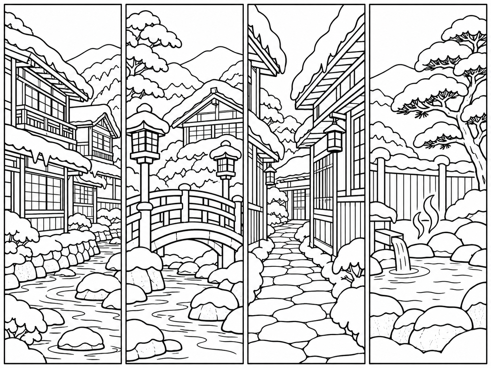
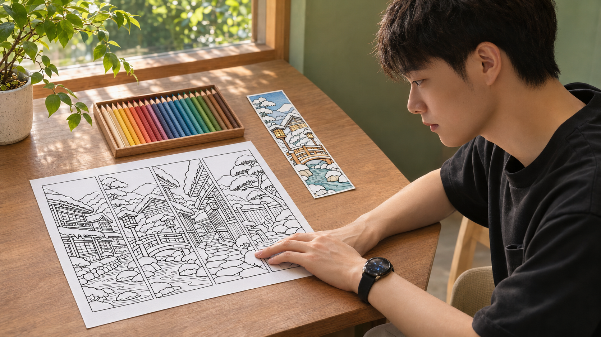
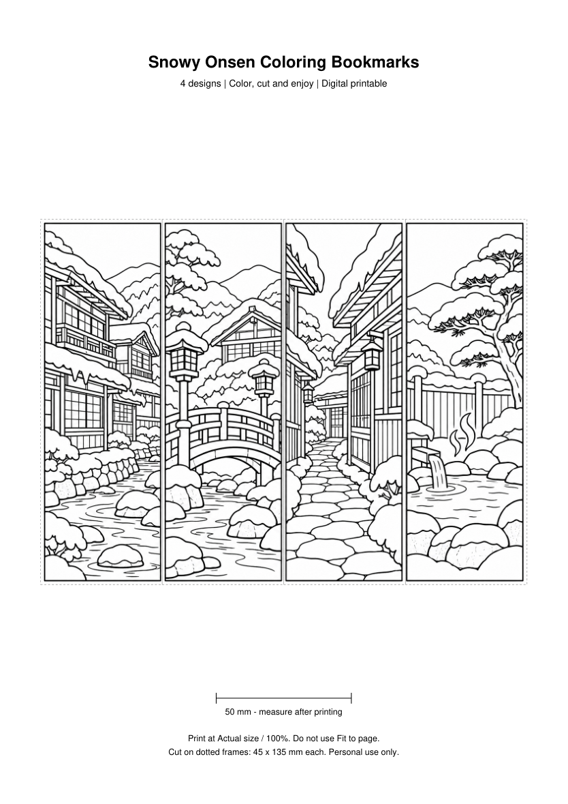

すみっち式 AI塗り絵しおり 販売スタートガイド

この4柄を、印刷できる商品へ。

日本の風景を、塗り絵にする
教えて
塗り絵しおり4柄

日本好きな海外のお客さんを考えて、木造旅館や石畳まで具体的に。今回は「雪の温泉街」で4柄をそろえます。
テーマ：雪の温泉街
4柄：旅館／橋／石畳／露天風呂
白地・黒線・文字なし
線画を作る指示文を開く
日本好きの海外の読書家に向けた、印刷できる塗り絵しおりの線画を作ってください。 【テーマ】雪の温泉街。架空の場所として描く。 【4柄】①川沿いの木造旅館 ②雪の橋と灯籠 ③旅館の間の石畳 ④雪松のある露天風呂 【構成】横4:縦3の1枚に、幅が等しい縦長のしおりを4本。各しおりは縦横比1:3。4本を重ねず、白い隙間で分ける。 【線】純白背景に黒い輪郭線だけ。着色・グレー・影・細かすぎる斜線は不要。大人が色鉛筆で塗れる、閉じた中くらいの面を残す。 【風景】屋根の雪、木の格子、石畳、川、灯籠など、日本の生活や建物が分かる具体物を入れる。意味のない鳥居や記号を足さない。 【入れないもの】文字、ロゴ、人物、既存キャラクター、特定の施設の再現。 まず画像を生成してください。生成後、4柄が区切られ、線が塗りやすいか確認します。
この指示文をChatGPTへ。画像が出たら、4柄・余分な文字・塗れる面を拡大して確認します。気になる所だけ直して、画像をダウンロード。
線が細かすぎるときの修正例を開く
この画像のテーマと4柄の順番を保って修正してください。 【直す箇所】3本目の建物の格子が細かすぎるので、線の数を減らして塗れる面を広くする。 純白背景と黒い輪郭線を保ち、色・文字・影は追加しないでください。 修正版を別のPNGとして保存してください。
線画を、買い手が印刷できるPDFへ
各45×135mm
4柄／1ページ
同じ4柄／1ページ
印刷用PDFを作る指示文を開く
添付した4柄の線画PNGを使い、印刷用PDFを2つ作ってください。 ・ファイル名：snowy-onsen-A4.pdf / snowy-onsen-US-Letter.pdf ・用紙：A4縦（210×297mm）／US Letter縦（8.5×11インチ） ・各ページ1枚、4柄を横一列。各柄の配置枠は45×135mm。縦横比は1:3。 ・印刷可能な余白を取り、薄い点線のカット枠を付ける。線画を切らない。 ・下部に50mmの確認用スケールを入れる。 ・印刷はActual size / 100%、Fit to pageは使わない旨を英語で短く記載。 ・4柄を塗り絵として使えるよう、白背景と黒線を保持。 完成した両PDFを開けるダウンロードファイルとして渡してください。作成できない場合は理由を伝え、PDFを作成済みとは表示しないでください。
開き直して4柄を確認。試し刷りは「実際のサイズ／100%」を選び、50mmの線を定規で測ります。
保存・印刷で迷ったら
ChatGPTの画像を開いてダウンロードし、PNGを保存します。PDF作成にはファイルを扱える機能を使ってください。画像を画面から撮影して代用せず、ダウンロードした元画像を添付します。
PDFの点線枠は45×135mmです。紙全体に合わせる設定では寸法が変わります。プリンターに合う紙で、塗りやすさと線の太さも確認してから商品へ使います。
ChatGPTの画像生成。機能・利用上限は利用環境によって異なります。
画像と中身を渡して、英語原稿を作る
英語もChatGPTに作らせます。画像と一緒に、用紙・寸法・現物ではないことまで渡す。ここも、同じ4柄で進めます。
A4／US Letter・4柄・45×135mm
THIS IS A DIGITAL DOWNLOAD.
No physical item will be shipped.
英語の商品原稿を作る指示文を開く
添付画像と下記の実際のファイル内容だけを使って、Etsy向けの英語の商品原稿を作ってください。 【対象】日本の風景が好きな海外の読書家、大人の塗り絵を楽しむ人 【内容】雪の温泉街の4柄。A4とUS Letter各1ページのPDFを2ファイル。各しおりの配置枠は45×135mm。 【販売形態】印刷・カットして使うデジタルダウンロード。現物・色鉛筆・彩色済みデータは含まない。 【作り方】オリジナルの指示に基づきAIで線画を生成。商品説明でAI使用を開示。 【利用条件案】個人利用のみ。データや印刷物の再配布・再販売不可。販売前に自分の条件として確認する。 出力：①自然で読みやすい商品名 ②内容物・サイズ・印刷手順・AI開示・利用条件を含む説明文 ③関連する英語タグ案13個（各20文字以内）④日本語訳。 売上、人気、レビュー、実物の発送、印刷品質の保証、未収録ファイルは書かない。
今回の英語原稿と日本語確認を開く
TITLE Snowy Japan Coloring Bookmarks | 4 Printable Onsen Scenes | A4 & US Letter PDF DESCRIPTION Bring a quiet snowy Japanese onsen town to your reading time. Print, color and cut four bookmark designs: a riverside wooden inn, a snowy bridge with lanterns, a stone lane between inns, and an outdoor hot spring. THIS IS A DIGITAL DOWNLOAD. No physical item will be shipped. The pencils and colored bookmark shown in tutorial examples are not included. YOU WILL RECEIVE - snowy-onsen-A4.pdf: 1 page, A4 size (210 x 297 mm) - snowy-onsen-US-Letter.pdf: 1 page, US Letter size (8.5 x 11 in) Both files contain the same 4 black-and-white designs. Each cut frame measures 45 x 135 mm (about 1.77 x 5.31 in). HOW TO USE 1. Open the PDF that matches your paper size. 2. Print at Actual size / 100%. Do not select Fit to page. Check the 50 mm scale with a ruler. 3. Color the designs, then cut along the dotted frames. Use paper suitable for your printer and coloring tools. Printer settings, paper and inks affect the finished result. AI DISCLOSURE These line drawings were created with AI using original prompts, then selected and arranged for this printable set. PERSONAL USE ONLY You may print these files for your own personal use. Do not share, redistribute or resell the digital files or printed copies. TAGS coloring bookmarks, Japan printable, onsen coloring, snowy village, adult coloring, printable bookmark, Japanese scenery, winter coloring, book lover gift, PDF download, relaxing coloring, ryokan art, DIY bookmarks 日本語確認 雪の温泉街4柄／同じ4柄をA4・US Letterの2PDFで提供／現物発送なし／彩色データなし／AI制作の開示あり／個人利用のみ。価格・税・ショップ条件は販売者が出品前に設定。これは原稿例です。自分で制作・確認した商品内容へ合わせて編集してください。TXTで保存する
「彩色済みデータ入り」「現物を発送」は、今回の中身と違いますよね。そう書かれていたら修正。AI使用の開示も残します。
Etsyへ、ファイルと原稿を入れる
あとはEtsyへ。ショップを準備してデジタル商品を選び、この4柄・英語原稿・PDF2つを入れます。
THIS IS A DIGITAL DOWNLOAD.
No physical item will be shipped.

- 画像とPDFが同じ4柄になっている
- 英語の内容物・寸法・利用条件が一致する
- AI使用を開示し、自分のデザインとして確認した
- 価格・手数料・買い手向けファイルを確かめた
プレビューで中身を読み返してから公開。ここは、自分で確認して進めます。
ショップ準備・規約・費用を確認する
初めての出品には、ショップ開設、本人確認、支払い・売上受取方法などの設定が必要です。登録・出品・販売に関わる費用は、地域や利用条件を公式で確認してください。
デジタル商品は、販売者が制作・デザインしたものが対象です。見本をそのまま再出品せず、自分でテーマ・構図を決め、権利と品質を確認してください。AI使用は商品説明で開示します。
即時ダウンロード用ファイルは最大5つ、各20MBまで。今回のPDF2つを個別に添付する構成なら収まります。
制作のまとまりを、そのままAIへ任せる
ただ、最初は1セット通すところから。線画・PDF・英語をまとめて任せて、最後に自分で中身を見ます。
1セットをまとめて任せる指示文を開く
日本の風景をテーマにした塗り絵しおりを、1セットだけ制作してください。 【テーマ】雪の温泉街。4柄は川沿いの木造旅館／雪の橋と灯籠／旅館の間の石畳／雪松の露天風呂。 添付の生成・PDF・英語原稿の指示に従い、次の順で進めてください。 1. 4柄の白黒線画PNGを生成。テーマ・線・柄数を確認。 2. A4とUS Letterの印刷用PDFを作成。各柄45×135mmの配置枠、50mmスケール、100%印刷の案内を付ける。 3. 実ファイルと一致する英語の商品名・説明・タグ13個、日本語訳、AI使用の開示文をTXTへ保存。 4. 4柄の数・文字混入・線の細かさ・PDF寸法・英語と内容物の一致を確認し、問題があれば修正。印刷品質は実際の紙で別途確認する。 5. 日付付きの別フォルダへPNG・PDF2つ・TXTを保存。既存ファイルは上書きしない。 外部サイトへのログイン、Etsyへの登録・保存・公開、購入・課金はしないでください。 使えない画像生成やファイル保存機能があれば、その工程と理由を報告して止める。作っていない成果物を完成扱いにしない。 最後は、保存先と、自分が確認すべき点だけを短く報告してください。
画像生成とファイル保存が使えるChatGPTの作業環境で、一括指示と線画・PDF・英語の指示文を渡します。まず1回、ファイルがそろうか確かめます。
定期実行を依頼する文を開く
直前に手動で完成した塗り絵しおり制作と同じ条件で、画像生成とファイル保存が定期実行でも使える場合に、毎週土曜の日本時間9:00に1セット作る定期タスクを準備してください。 各回は手動で通った制作指示を保存して使い、日付付きの別フォルダへ保存してください。テーマは雪の温泉街、4柄・PNG・PDF2つ・英語原稿TXTの構成を保持。 外部公開・出品・登録・購入・課金はしない。確認できる下書きの完成で止める。 画像生成やローカル保存が利用できない場合は、その回の未完了工程を報告し、完成とは扱わない。 保存する前に、タスク内容・タイムゾーン・実行時刻・保存先を見せてください。対応していない場合は作成せず、毎回この指示を送る方法を案内してください。
1回通ったら、対応環境で定期タスクを依頼できます。内容・日本時間・保存先を見てから保存。「Scheduled」で次の実行を確認します。
定期実行を使う前の条件
ローカルファイルを使う定期タスクでは、PCの電源とデスクトップアプリを起動したままにし、作業フォルダを使える状態にします。利用できる機能や権限は環境によります。
画像生成や保存が使えない場合は、作成できた部分を確認し、一括指示をその都度送るところから使ってください。タスクの作成と、次回の実行成功は別に確認します。
公式の定期タスク案内は、手動での事前確認と、最初の数回の出力確認を案内しています。
まず、雪の温泉街を1セット。
まず線画を1枚作って、PDFを開き直す。最初は、ここまで試してみてください。
ガイド・作例・指示文をまとめて保存ZIPを展開し、index.htmlを開きます。印刷用PDF2つ、英語原稿、コピー用指示文、チェック表を同梱。ネット接続なしでも教材を読めます。
出品前チェックを保存このしおりを、AI副業の一歩に。
4柄の商品データを作ったら、次は「誰に、何を、どこで売るか」を自分の副業として整理する番です。すみっちの公式LINEでは、AI副業の進め方をまとめた「AIマネタイズの教科書」を受け取れます。
 公式LINEで教科書を受け取る →
公式LINEで教科書を受け取る →